PISANGLENS · E03_LARGE_SEED42Visual untuk pitching ke mentor
12 visual utama, plot pendukung, gambar raw dan augmentasi, seluruh misklasifikasi, serta data sumber.
Semua evaluasi berasal dari artefak tersimpan. Tidak ada training atau inferensi ulang.
98,52%Akurasi test internal97,94%Macro-F1 test internal
133 / 135Prediksi benar sebelum policy
Bukti masih internal. Dua kesalahan argmax: satu ditandai tidak yakin, satu tetap diterima policy.
Foto lapangan, input di luar empat kelas, dan benchmark perangkat target belum tersedia.
Pitching 5 menit: pilih visual utama 01, 02, 03, 05, 06, 08, dan 12. PNG utama berukuran 2880×1620; SVG tersedia untuk edit.
UTAMAKenali data dan empat kelas
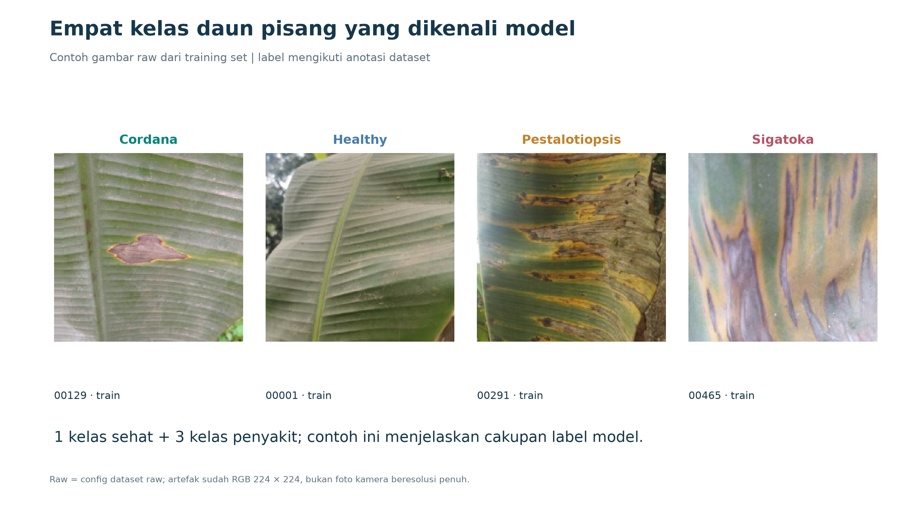
Empat contoh training; gambar raw individual tersedia pada folder 03_GAMBAR_RAW.
Narasi: Model mengenali healthy, cordana, pestalotiopsis, dan sigatoka. Label aktual merujuk dataset.
Buka PNG · Buka SVGUTAMAEDA, cleaning, dan pembagian data
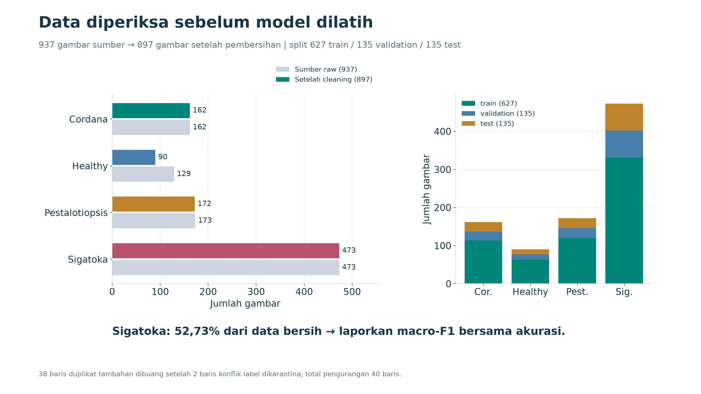
Jumlah sumber raw berbeda dari set bersih. Augmentasi online tidak menambah jumlah gambar unik pada manifest.
Narasi: Kami menghapus duplikat, mengarantina konflik label, lalu membagi 897 gambar. Ketimpangan kelas menjadi alasan memakai macro-F1.
Buka PNG · Buka SVGUTAMARaw dibanding augmentasi
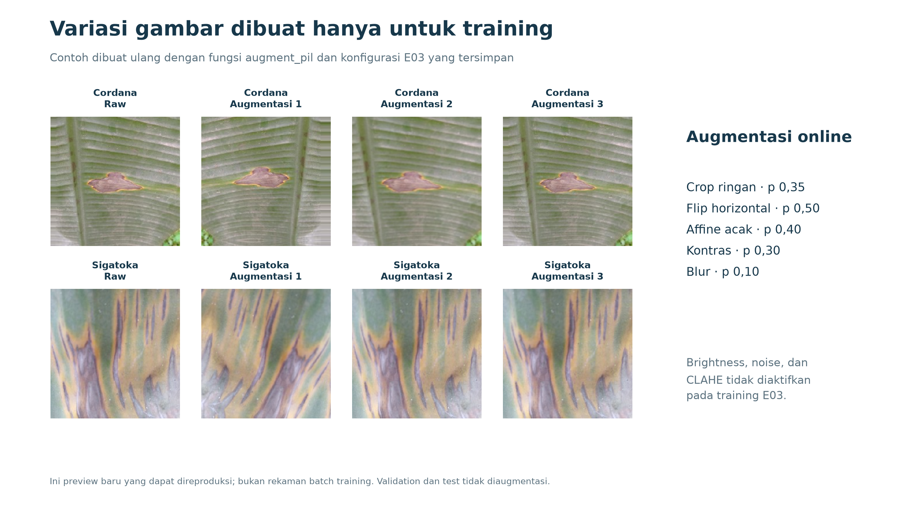
Dua kelas ditampilkan agar terbaca. Seluruh empat kelas dan 12 file hasil augmentasi tersedia terpisah.
Narasi: Augmentasi menambah variasi tampilan pada training, bukan sampel independen. Preview memakai fungsi asli notebook dengan seed tercatat.
Buka PNG · Buka SVGUTAMADasar pemilihan E03 Large
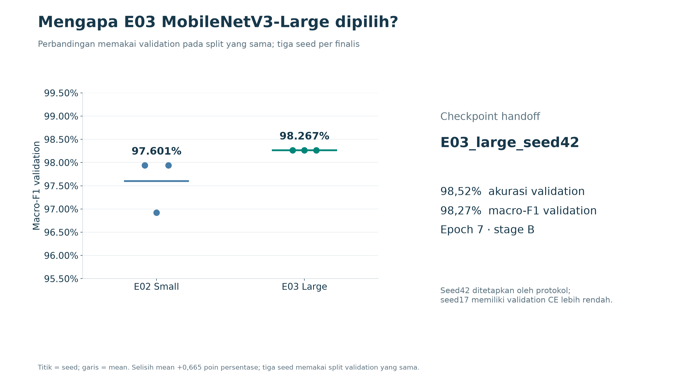
E03 mean validation macro-F1 98,267%; E02 97,601%. Seed42 adalah checkpoint handoff sesuai protokol.
Narasi: Large dipilih berdasarkan agregat validation tiga seed. Hasil test yang dibahas berikutnya khusus seed42.
Buka PNG · Buka SVGUTAMAKurva training E03 seed42
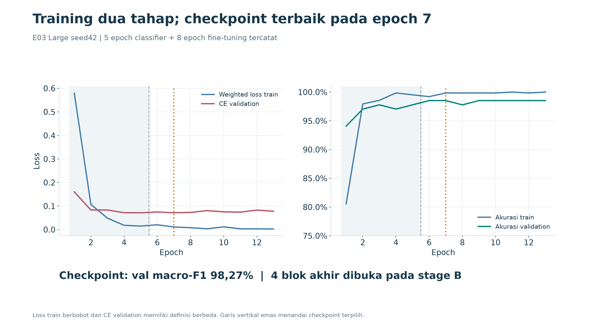
History asli 13 epoch; best checkpoint epoch 7. Early stopping memakai kriteria tersimpan, bukan test.
Narasi: Model dilatih dalam dua tahap. Performa validation cepat mendatar; hasil tinggi ini masih perlu diuji pada data lapangan baru.
Buka PNG · Buka SVGUTAMAConfusion matrix test internal
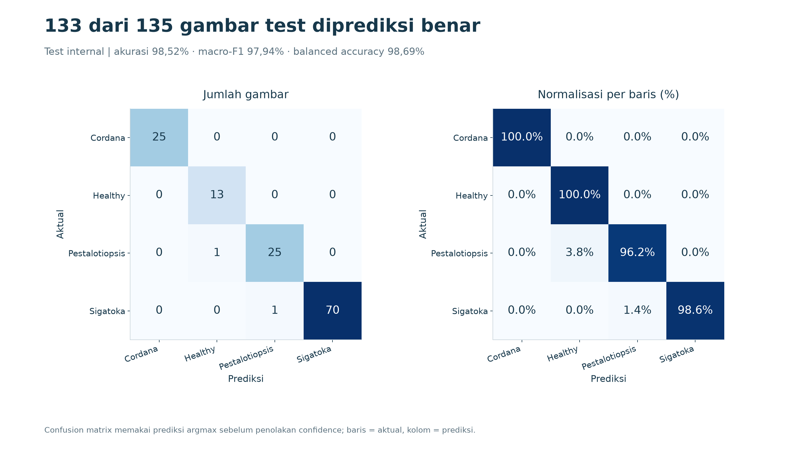
Dua kesalahan: pestalotiopsis→healthy dan sigatoka→pestalotiopsis, masing-masing satu gambar.
Narasi: Test terdiri dari 135 gambar. Dua kesalahan tetap dihitung dalam akurasi 98,52%, termasuk satu prediksi yang ditolak policy.
Buka PNG · Buka SVGUTAMAContoh prediksi benar
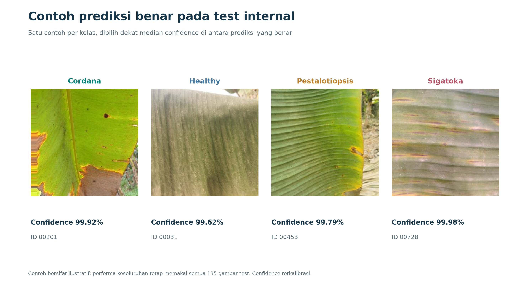
File individual mencakup contoh benar berconfidence terendah dan median per kelas; bukan pilihan hanya confidence tertinggi.
Narasi: Berikut contoh prediksi benar dari test. Confidence bukan jaminan bahwa gambar baru dari lapangan akan dikenali dengan benar.
Buka PNG · Buka SVGUTAMASeluruh salah klasifikasi test
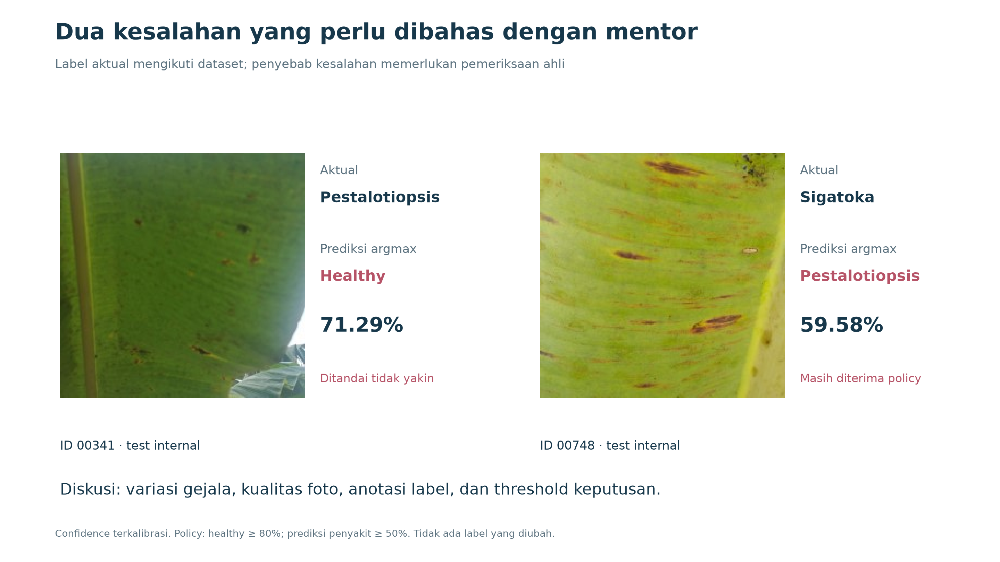
Pestalotiopsis→healthy 71,29% ditolak; sigatoka→pestalotiopsis 59,58% tetap diterima policy.
Narasi: Policy menahan satu prediksi healthy yang salah, tetapi belum menghilangkan kesalahan nama penyakit. Penyebab visual belum terkonfirmasi ahli.
Buka PNG · Buka SVGUTAMAPerilaku kebijakan confidence
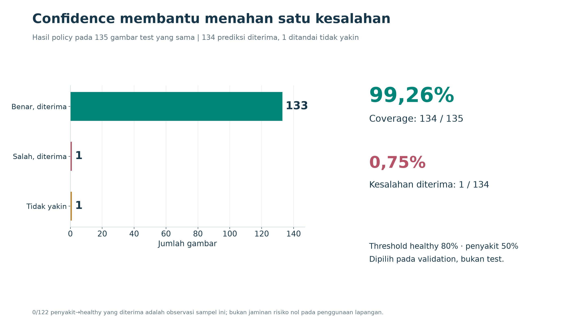
Akurasi klasifikasi mentah 133/135; sesudah policy ada 133 benar diterima, 1 salah diterima, dan 1 uncertain.
Narasi: Coverage 99,26% dan risiko salah di antara prediksi diterima 0,75%. Satu uncertain tidak dihapus dari perhitungan akurasi mentah.
Buka PNG · Buka SVGUTAMAKetahanan terhadap gangguan gambar
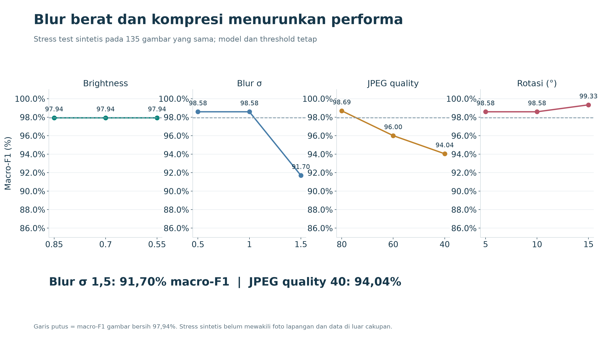
Evaluasi tersimpan, tanpa tuning baru. Nilai yang naik pada transform tertentu bukan bukti augmentasi selalu memperbaiki model.
Narasi: Model sensitif pada blur berat dan kompresi kuat. Ini memberi prioritas untuk panduan kualitas foto dan pengujian eksternal berikutnya.
Buka PNG · Buka SVGUTAMAUkuran model dan benchmark CPU
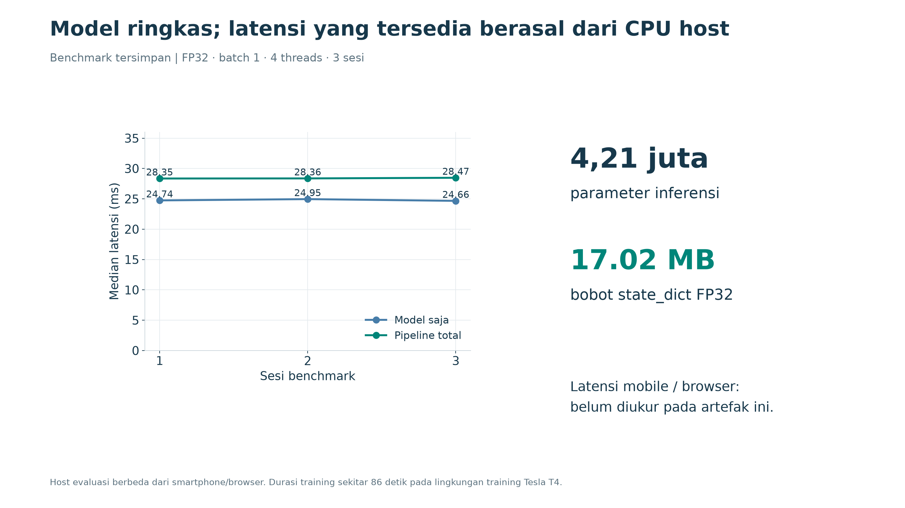
Ukuran 17,02 MB desimal untuk inference state_dict, tidak termasuk optimizer. Latensi adalah median per sesi CPU host.
Narasi: MobileNetV3-Large memiliki 4,21 juta parameter dengan file bobot sekitar 17 MB. Klaim performa perangkat pengguna menunggu benchmark nyata.
Buka PNG · Buka SVGUTAMABatas bukti dan diskusi mentor
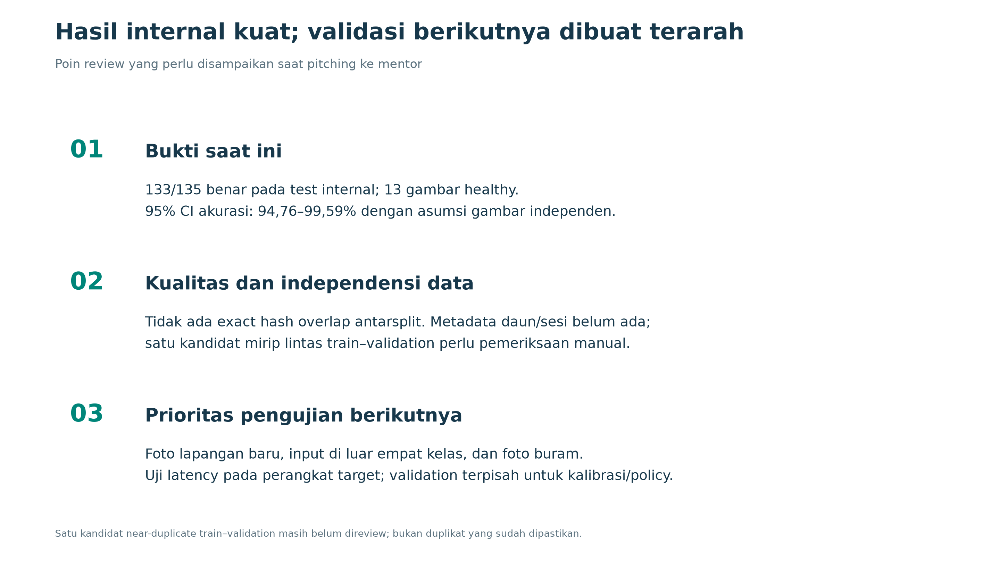
Field test dan OOD belum tersedia. Validation digunakan kembali untuk pemilihan model, kalibrasi, dan policy.
Narasi: Temuan saat ini mendukung prototipe dan pengujian berikutnya. Kami belum memiliki bukti generalisasi lapangan atau kecepatan pada perangkat target.
Buka PNG · Buka SVGPENDUKUNGdistribusi sumber 937 asli
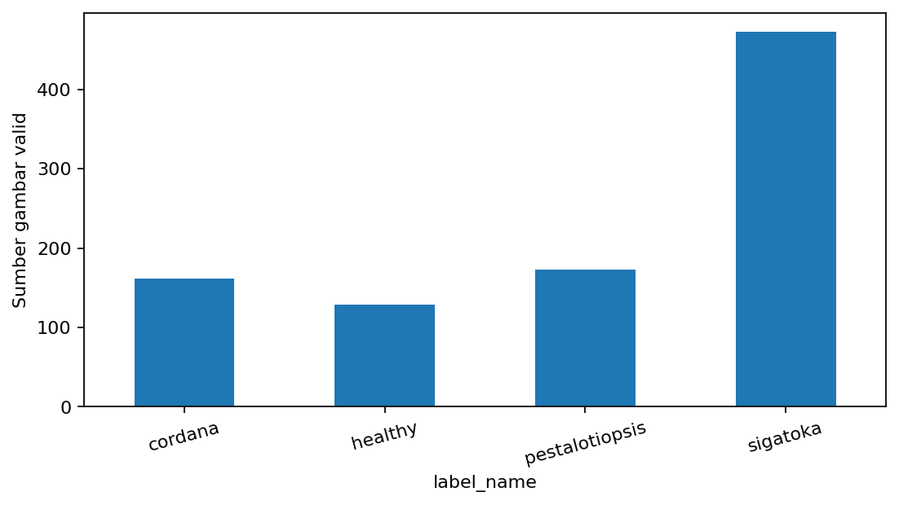
Salinan plot asli: eda/class_distribution.png
Narasi: Lampiran teknis; perhatikan split dan sumber pada nama file.
Buka PNGPENDUKUNGkualitas gambar asli
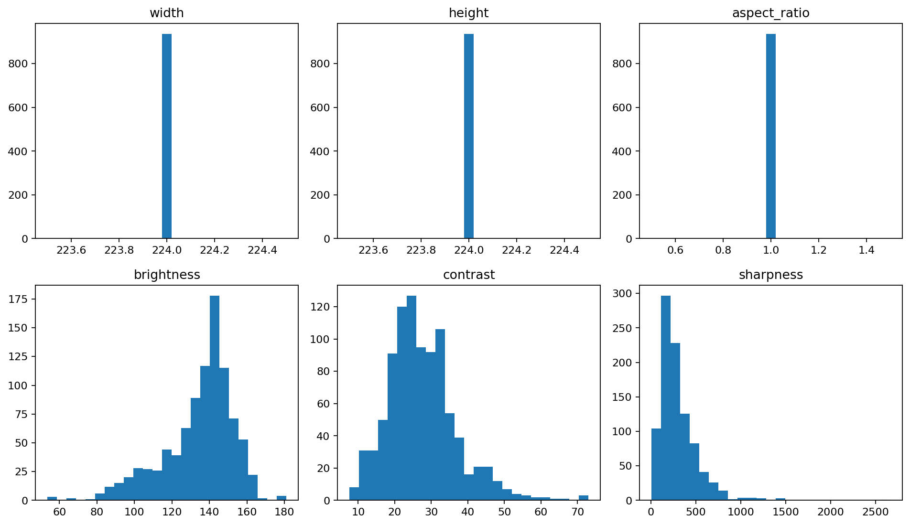
Salinan plot asli: eda/quality_distributions.png
Narasi: Lampiran teknis; perhatikan split dan sumber pada nama file.
Buka PNGPENDUKUNGhistogram rgb asli
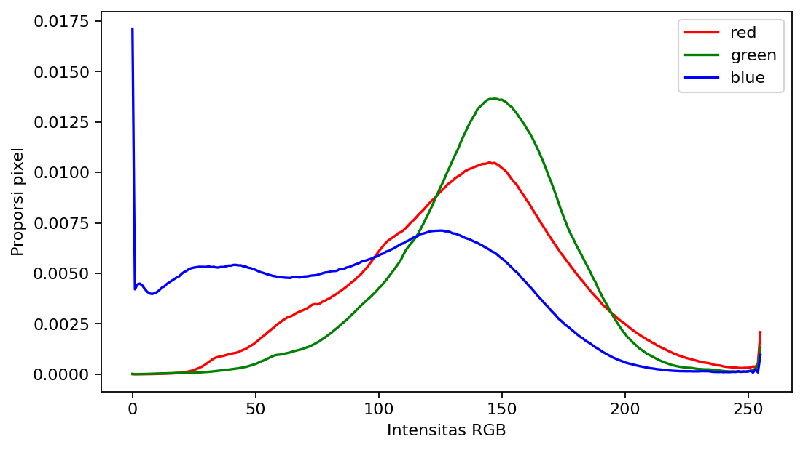
Salinan plot asli: eda/rgb_histogram.png
Narasi: Lampiran teknis; perhatikan split dan sumber pada nama file.
Buka PNGPENDUKUNGcontoh per kelas asli
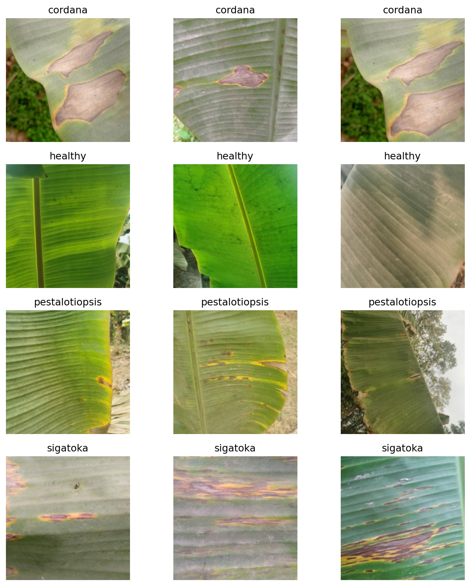
Salinan plot asli: eda/representative_images.png
Narasi: Lampiran teknis; perhatikan split dan sumber pada nama file.
Buka PNGPENDUKUNGpreview augmentasi dari run asli
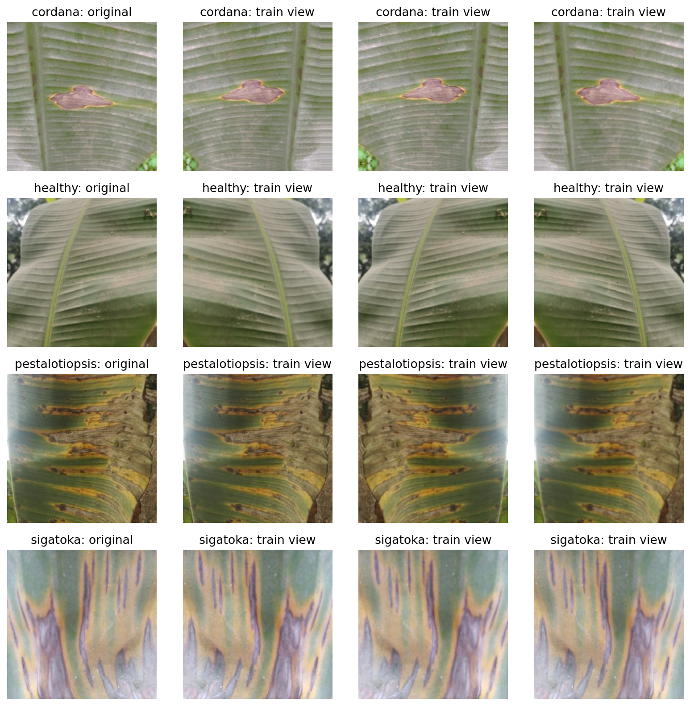
Salinan plot asli: augmentation_samples/preview.png
Narasi: Lampiran teknis; perhatikan split dan sumber pada nama file.
Buka PNGPENDUKUNGlearning curves E03 seed42 asli
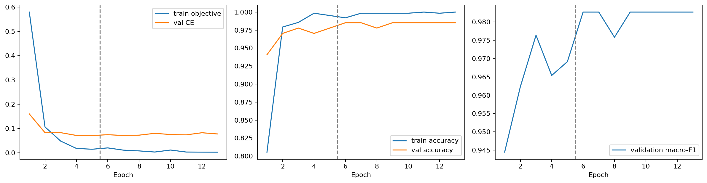
Salinan plot asli: training/E03_large_seed42/plots/learning_curves.png
Narasi: Lampiran teknis; perhatikan split dan sumber pada nama file.
Buka PNGPENDUKUNGlearning rate E03 seed42 asli
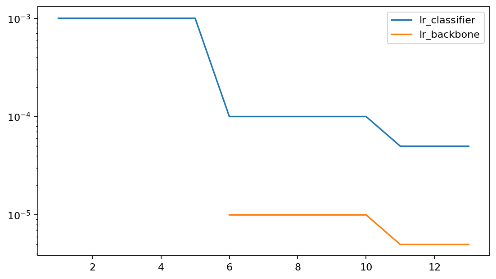
Salinan plot asli: training/E03_large_seed42/plots/learning_rate.png
Narasi: Lampiran teknis; perhatikan split dan sumber pada nama file.
Buka PNGPENDUKUNGconfusion matrix VALIDATION asli
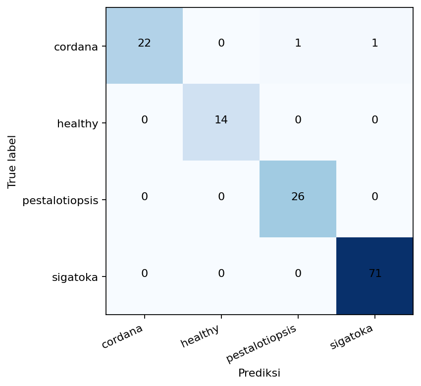
Salinan plot asli: training/E03_large_seed42/validation/confusion_matrix.png
Narasi: Lampiran teknis; perhatikan split dan sumber pada nama file.
Buka PNGPENDUKUNGconfusion matrix TEST asli
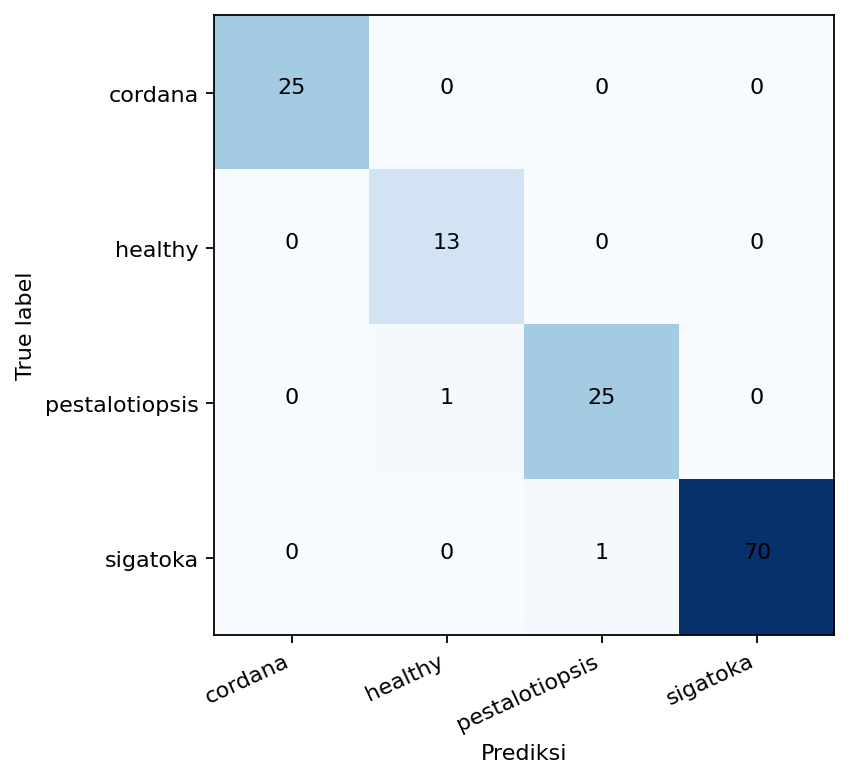
Salinan plot asli: evaluation/internal/confusion_matrix.png
Narasi: Lampiran teknis; perhatikan split dan sumber pada nama file.
Buka PNGPENDUKUNGconfusion matrix TEST normalized asli
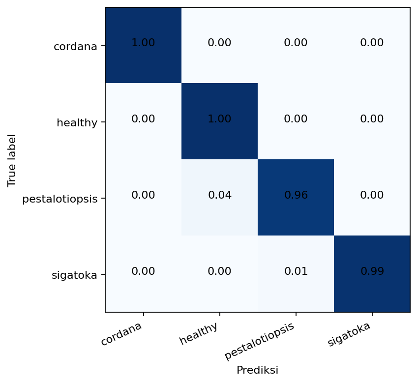
Salinan plot asli: evaluation/internal/confusion_matrix_normalized.png
Narasi: Lampiran teknis; perhatikan split dan sumber pada nama file.
Buka PNGPENDUKUNGroc TEST asli
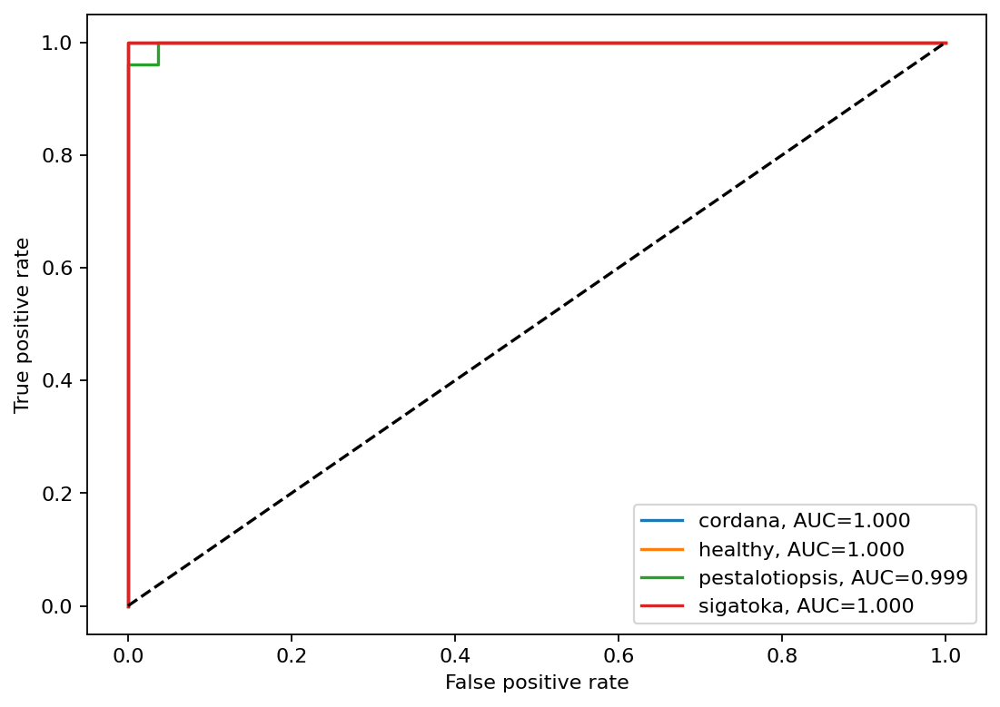
Salinan plot asli: evaluation/internal/roc_curves.png
Narasi: Lampiran teknis; perhatikan split dan sumber pada nama file.
Buka PNGPENDUKUNGreliability asli
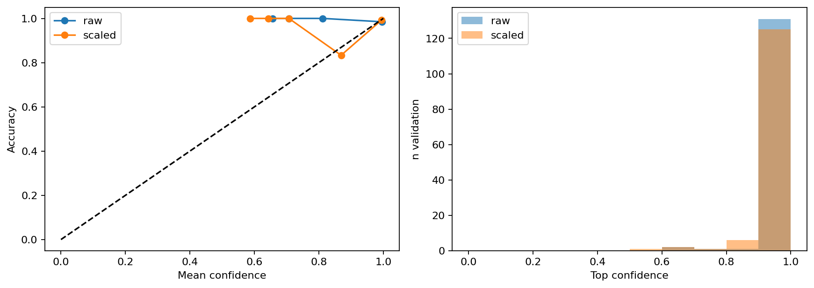
Salinan plot asli: evaluation/calibration/reliability.png
Narasi: Lampiran teknis; perhatikan split dan sumber pada nama file.
Buka PNGPENDUKUNGperforma per kelas dan interval
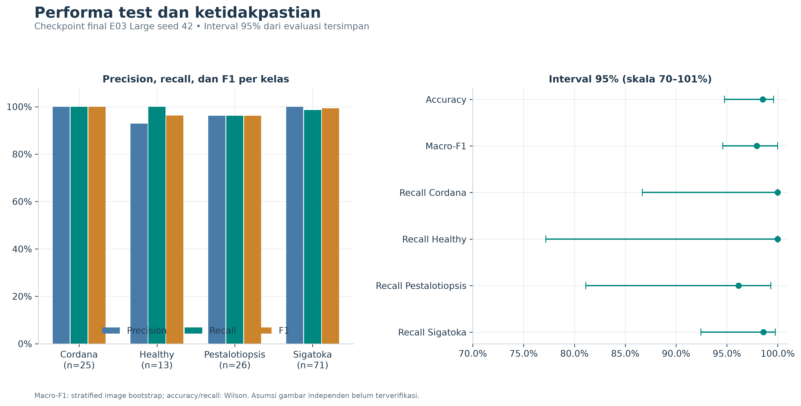
Salinan analisis tersimpan: 03_evaluasi/performa_dan_interval
Narasi: Lampiran untuk tanya jawab mentor.
Buka PNG · Buka SVGPENDUKUNGroc dan precision recall TEST
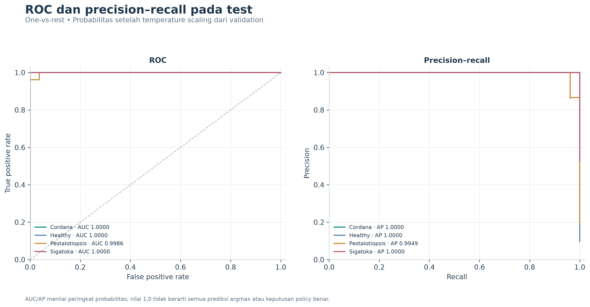
Salinan analisis tersimpan: 03_evaluasi/roc_dan_precision_recall
Narasi: Lampiran untuk tanya jawab mentor.
Buka PNG · Buka SVGPENDUKUNGkandidat mirip train validation
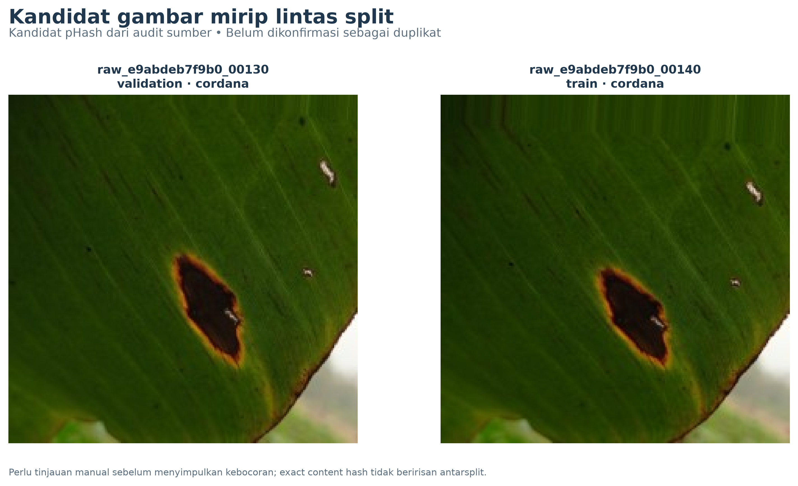
Salinan analisis tersimpan: 05_dataset/kandidat_mirip_lintas_split
Narasi: Lampiran untuk tanya jawab mentor.
Buka PNG · Buka SVGPENDUKUNGkurva training rinci E03 seed42

Salinan analisis tersimpan: 02_training/E03_large_seed42/kurva_training
Narasi: Lampiran untuk tanya jawab mentor.
Buka PNG · Buka SVGPENDUKUNGSemua kelas: raw dan augmentasi
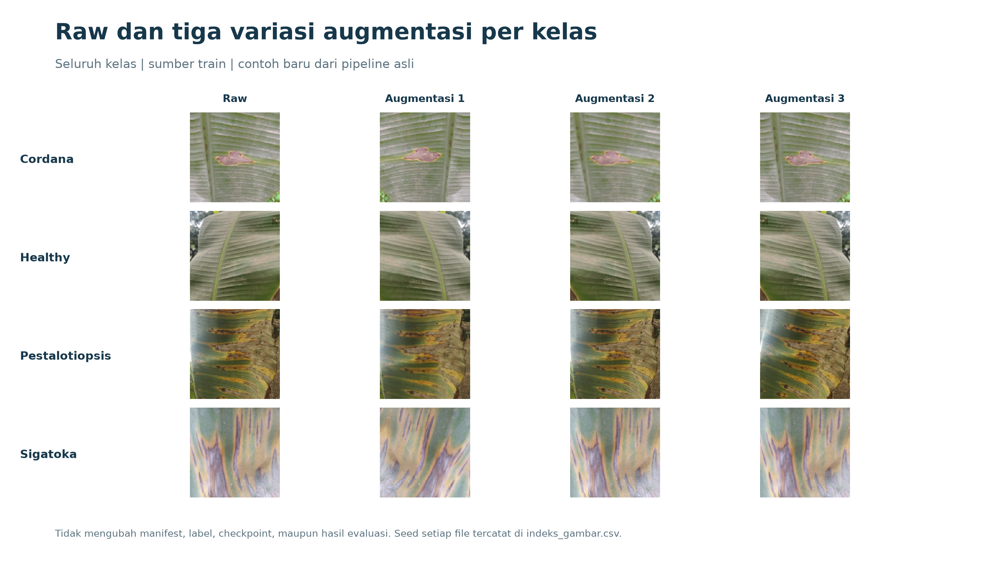
Setiap baris berasal dari satu gambar train yang sama. Variasi tidak harus menjalankan setiap jenis transformasi.
Narasi: Lampiran seluruh kelas untuk menjelaskan augmentasi online.
Buka PNG · Buka SVGPENDUKUNGContoh dampak gangguan pada satu gambar
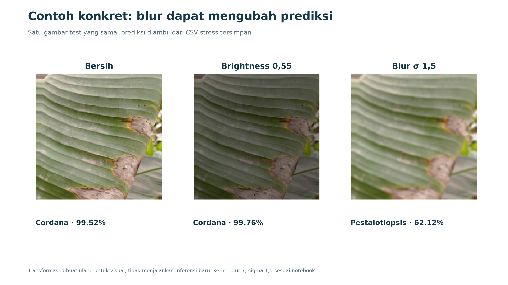
Kasus dipilih karena benar pada clean dan salah pada blur berat; bukan sampel acak atau estimasi rata-rata.
Narasi: Contoh ini mengilustrasikan kasus kegagalan yang teramati pada stress test.
Buka PNG · Buka SVG